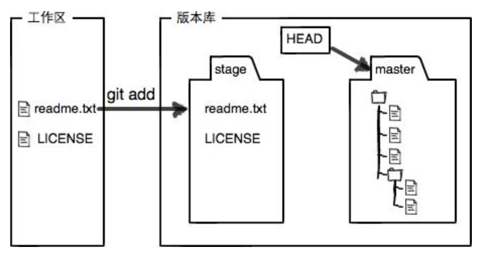
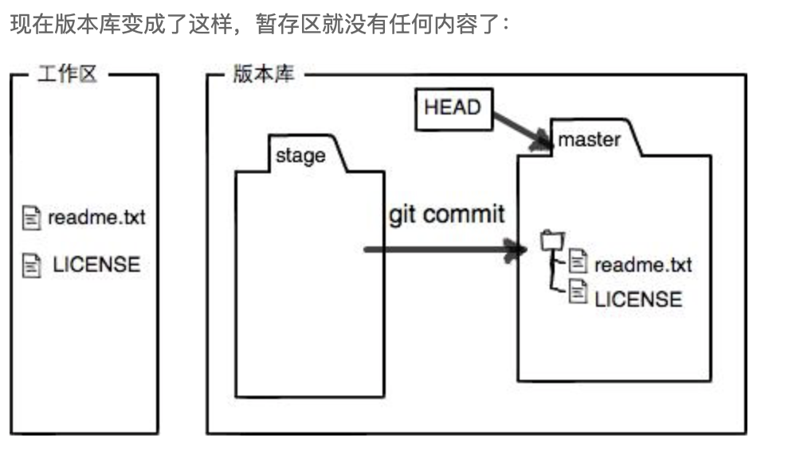
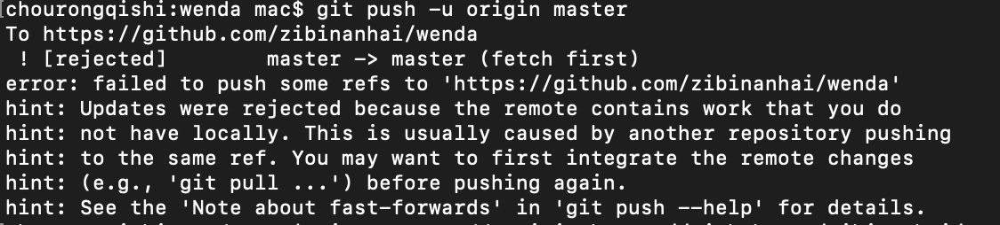

前言
这篇文章是学习Git过程中的笔记
1.简介
版本控制系统解决了代码管理的问题（每次改动需要副本，每个人的改动也不一样），自动管理版本。
Linus花了两周时间自己用C写了一个分布式版本控制系统
2.分布式和集中式
CVS及SVN都是集中式的版本控制系统，而Git是分布式版本控制系统
- 集中式就是有一个相当于”图书馆”的服务器，干活前先要从服务器取到最新版本，干完活上传到服务器
缺点：必须联网才能工作，安全性低 - 分布式：每个人电脑里都有完整的版本库，就不需要联网了，和别人协作的时候，互相推送给对方改动即可。
3.安装
mac下载安装包手动安装即可（也可以用Homebrew）
在命令行用以下两行代码设置本台机器的名字和邮件
1 | git config —global user.name “Your Name” |
4.提交
- 提交前，先要初始化仓库，在一个文件夹里，输入命令
git init就会初始化，并且文件夹会生成一个.git文件夹(默认隐藏) git add提交文件或者修改git add .提交全部文件夹git commit -m “这次改了什么的说明”，可以add几次再commit一次
add后面的文件不用双引号，commit -m要双引号git status命令可以让我们时刻掌握仓库当前的状态git diff顾名思义就是查看difference，看具体修改了什么内容git log更改日志- 如果嫌输出信息太多，看得眼花缭乱的，可以试试
git log —pretty=oneline5.回退版本
git reset —hard HEAD^
回退版本，HEAD^就是上个版本，HEAD^^是上上个版本，HEAD~100是前100个版本- 当错删了，命令行没关时，去前面找HEAD，
就是git log —pretty=oneline的每个版本前面的字符串，前几位即可git reset —hard 1094a - Git提供了一个命令git reflog用来记录你的每一次命令：
- 总结：HEAD指向的版本就是当前版本，因此，Git允许我们在版本的历史之间穿梭，使用命令
git reset —hard commit_id6.工作区和暂缓区
一个文件夹就是一个工作区，隐藏目录.git是版本库
![][1.jpg]
stage是暂缓区 ，add就是把文件添加到暂缓区
commit就是把暂缓区的内容提交到当前分支
add以后：

commit以后

7.撤销修改
git checkout — file可以丢弃工作区的修改：
file在工作区—>则回到分支版本库状态
file在暂缓区–>则回到刚add的状态
总之，回到最近一次commit/add的状态（其实就是还原到最新版本，暂缓区如果有更新就比分支版本库新一个版本）- 总结：
场景1：直接丢弃工作区的修改时，用命令git checkout — file
场景2：想丢弃暂缓区的改动时，两步，
第一步：git reset HEAD file，把暂缓区的修改撤销，重新放到工作区
第二步：git checkout — file
场景3：已经提交
参考回退版本删除文件
- 当你要删除文件的时候，可以采用命令：
rm test.txt
这个时候（也就是说这个时候只执行了rm test.txt）有两种情况 - 第一种情况:的确要把test.txt删掉，那么可以执行 git rm test.txt git commit -m “remove test.txt” 然后文件就被删掉了
- 第二种情况:删错文件了，不应该删test.txt，注意这时只执行了rm test.txt，还没 有提交，所以可以执行git checkout test.txt将文件恢复。
（执行完git commit -m “remove test.txt”后就不能能用checkout恢复，commit之后版本库里的文件也没了，自然没办法用checkout恢复，而是要用其他的办法） - git checkout — file就是用版本库（暂缓区也在版本库）里的版本替换工作区的版本，无论工作区修改删除，都可以”一键还原”
9.远程仓库
ssh-keygen -t rsa -C “youremail@example.com”创建ssh key- 一直默认回车即可，可以在用户主目录里找到.ssh目录，里面有id_rsa和id_rsa.pub两个文件，这两个就是SSH Key的秘钥对，id_rsa是私钥，不能泄露出去，id_rsa.pub是公钥
- 登陆GitHub，打开“Account settings”，“SSH Keys”页面：
然后，点“Add SSH Key”，填上任意Title，在Key文本框里粘贴id_rsa.pub文件的内容即可 - 为什么GitHub需要SSH Key呢？因为GitHub需要识别出你推送的提交确实是你推送的，而不是别人冒充的，而Git支持SSH协议，所以，GitHub只要知道了你的公钥，就可以确认只有你自己才能推送
- 可以添加多个电脑的key。
添加远程仓库
- 要关联一个远程库，使用命令
git remote add origin https://github.com/用户名/仓库名m 关联后，使用命令
git push -u origin master第一次推送master分支的所有内容；注意: 如果新建远程仓库不是空的，例如你勾选了Initialize this repository with a README。那么你通过命令
$ git push -u origin master是会报错的，如下：
这是由于你新创建的那个仓库里面的README文件不在本地仓库目录中，这时我们可以通过以下命令先将内容合并：$ git pull —rebase origin master
再输入:$ git push origin master
此后，每次本地提交后，只要有必要，就可以使用命令git push origin master推送最新修改
11.分支
Git鼓励大量使用分支：
查看分支：
git branch- 创建分支：
git branch <name> - 切换分支：
git checkout <name>或者git switch <name> - 创建+切换分支：
git checkout -b <name>或者git switch -c <name> - 合并某分支到当前分支：
git merge <name> 删除分支：
git branch -d <name>标签git tag
用于新建一个标签，默认为
HEAD（最新提交的commit上） ，也可以指定一个commit id；- git tag -a
-m “blablabla…”### 可以指定标签信息； - git tag可以查看所有标签。
12.标签
git tag <tagname>用于新建一个标签，默认为
HEAD（最新提交的commit上） ，也可以指定一个commit id；git tag -a <tagname> -m “blablabla…”###可以指定标签信息；git tag可以查看所有标签。
操作标签
git push origin <tagname>可以推送一个本地标签；git push origin —tags可以推送全部未推送过的本地标签；git tag -d <tagname>可以删除一个本地标签；git push origin :refs/tags/<tagname>可以删除一个远程标签。